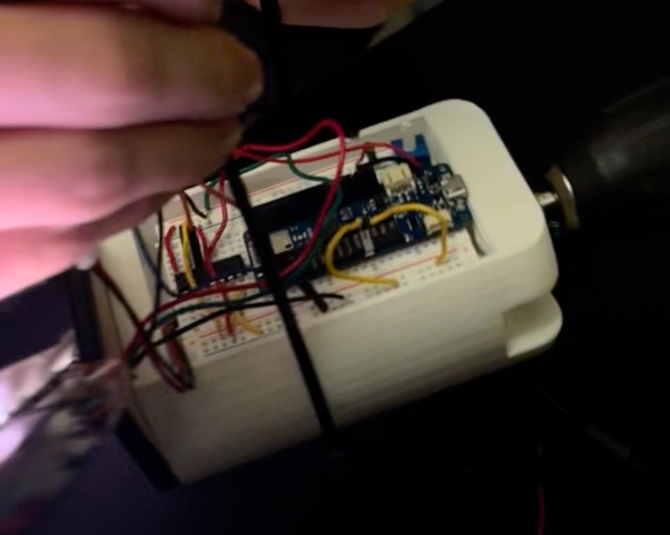
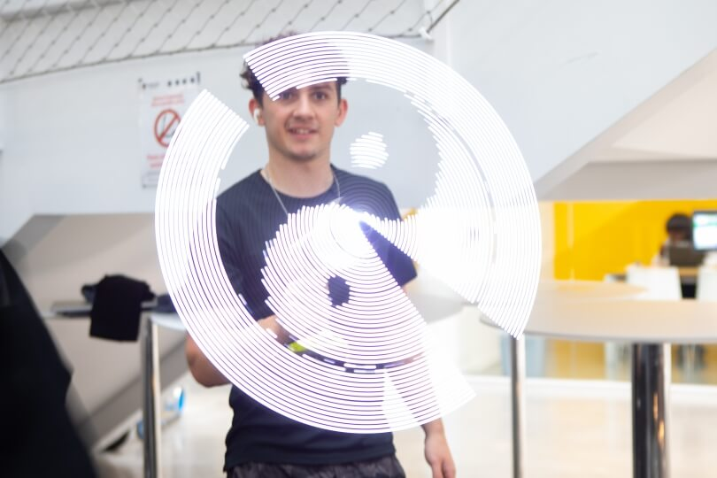

Gallery
IMAGES



Arduino-based persistence-of-vision holographic fan — custom PCB, Bluetooth control, and 3D-printed housing. Images appear to float in mid-air.

Designed and programmed a 3D holographic fan display system using Arduino microcontrollers. The project creates the illusion of three-dimensional images floating in mid-air through persistence of vision — precisely controlling LED strips rotating at high speed.
The holographic fan works on persistence of vision: a 1D strip of LEDs is mounted on a rotating arm, and by precisely timing which LEDs fire at each angular position as the arm spins, the eye integrates the individual flashes into a coherent 2D image floating in mid-air. Rather than using position sensors, the motor was run at a fixed calibrated speed and LED timing was set to match — making image timing stable and predictable as long as motor held target RPM.
Core software is a coordinate mapping algorithm: a 2D pixel image is converted into a lookup table specifying, for each angular step of the arm's rotation, which LEDs on the 1D strip should be active. The Arduino fires each LED subset at the corresponding time interval with microsecond-level precision, stepping through the full lookup table once per revolution. A Bluetooth serial connection allows new images to be loaded wirelessly without stopping the device.
The housing presented a real mechanical challenge: all electronics had to rotate with the arm, so the breadboard, battery, and Arduino needed to be packaged compactly and balanced about the rotation axis. The enclosure was designed in CAD and 3D printed, with integrated channels to route the LED strip cable along the inside of the arm. Several printed iterations were needed to get fit, balance, and cable routing right.
Gallery
